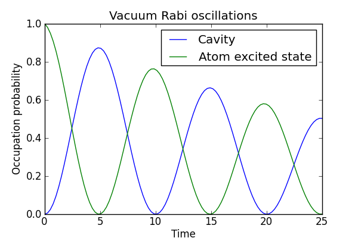

Vacuum Rabi oscillations in the Jaynes-Cummings model with dissipation¶
This example illustrates the vacuum Rabi oscillations in the Jaynes-Cummings model.
#
# Rabi oscillation in the dissipative Jaynes-Cummings model.
#
from qutip import *
import time
def jc_integrate(N, wc, wa, g, kappa, gamma, psi0, use_rwa, tlist):
# Hamiltonian
idc = qeye(N)
ida = qeye(2)
a = tensor(destroy(N), ida)
sm = tensor(idc, destroy(2))
if use_rwa:
# use the rotating wave approxiation
H = wc * a.dag() * a + wa * sm.dag() * sm + g * (a.dag() * sm + a * sm.dag())
else:
H = wc * a.dag() * a + wa * sm.dag() * sm + g * (a.dag() + a) * (sm + sm.dag())
# collapse operators
c_op_list = []
n_th_a = 0.0 # zero temperature
rate = kappa * (1 + n_th_a)
if rate > 0.0:
c_op_list.append(sqrt(rate) * a)
rate = kappa * n_th_a
if rate > 0.0:
c_op_list.append(sqrt(rate) * a.dag())
rate = gamma
if rate > 0.0:
c_op_list.append(sqrt(rate) * sm)
# evolve and calculate expectation values
expt_list = odesolve(H, psi0, tlist, c_op_list, [a.dag() * a, sm.dag() * sm])
return expt_list[0], expt_list[1]
#
# set up the calculation
#
wc = 1.0 * 2 * pi # cavity frequency
wa = 1.0 * 2 * pi # atom frequency
g = 0.05 * 2 * pi # coupling strength
kappa = 0.005 # cavity dissipation rate
gamma = 0.05 # atom dissipation rate
N = 5 # number of cavity fock states
use_rwa = True
# intial state
psi0 = tensor(basis(N,0), basis(2,1)) # start with an excited atom
#psi0 = tensor(coherent(N,1), basis(2,0)) # or a coherent state the in cavity
tlist = linspace(0,25,100)
start_time = time.time()
nc, na = jc_integrate(N, wc, wa, g, kappa, gamma, psi0, use_rwa, tlist)
print 'time elapsed = ' +str(time.time() - start_time)
fig=figure(figsize=[6,4])
plot(tlist, nc)
plot(tlist, na)
legend(("Cavity", "Atom excited state"))
xlabel('Time')
ylabel('Occupation probability')
title('Vacuum Rabi oscillations')
savefig('examples-jc-model.png')
close(fig)
